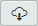
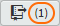
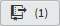
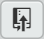

8.4
Pulling remote changes into the local repository
This is probably the most common situation that arises when working with remote repositories (not so much in my case, the Practical Series website has so far been a solo effort—I don’t always play well with others—I usually do things my own way and I’m too old to change now—most people get used to me in the end, back me or sack me that’s my motto).
Where the repository is a team effort, the remote repository quite often changes and moves ahead of your local copy. The remote repository should always be considered the master repository.
To illustrate the point, let’s make a change to the d-03-contact branch on the remote repository and see how we get this back into our local repository using Brackets.
To GitHub then. Open the lab-01-website repository in GitHub and switch to the d-03-contact branch. It should look like this:
Figure 8.32 GitHub—README.md on the d-03-contact branch
Make sure d-03-contact is selected in the button. Now click the README.md file (this is the file we are going to change); it’s highlighted in Figure 8.32. This will show a preview of the README.md file:
Figure 8.33 GitHub—README.md preview page
To edit the file click the pencil symbol (highlighted).This now puts us on the edit page (Figure 8.34):
Figure 8.34 GitHub—edit README.md
Let’s add some more text to the file, add the following:
## Website contents This site contains the following pages: * index.html * 01-intro.html * 02-about.html * 03-contact.html
| Code 8.2 README.md file modification |
It looks like this on GitHub:
Figure 8.35 GitHub—README.md modifications (highlighted)
If you click the tab, it will show how the page looks:

Figure 8.36 GitHub—README.md modifications preview
To commit the change we need to complete the boxes at the bottom by adding the commit message:
Figure 8.37 GitHub—README.md commit message
Enter the commit message as shown above and click the green button.
Now go back to the repository home page by clicking the link next to the branch button (highlighted below):
Figure 8.38 GitHub—go to repository home page
The home page now looks like this (make sure the d-03-contact branch is selected):
Figure 8.39 GitHub—new commit on d-03-contact branch
There is a new commit, it is [4da998f] and the workflow is:
Figure 8.40 Remote repository workflow
To summarise, the remote repository now has an extra commit on the d-03-contact branch:
Back to Brackets. My local repository looks like this in Brackets (I’m on the d-03-contact branch):
Figure 8.41 Brackets—d-03-contact commit history
In Brackets, there is nothing to indicate that it knows of any changes to the remote repository.
To refresh Brackets with data from the remote repository click the button .
This will open (briefly) the fetch in progress screen:
Figure 8.42 Brackets—Fetch in progress
This refreshes the Git pane counters:
Figure 8.43 Bracket—updated counters
At this point, nothing has actually changed; the changes made to README.md in the remote repository are still not present on the local repository. All we’ve done is ask Brackets to check the status of the remote repository.
Brackets has detected that the remote repository has an additional commit, hence the number 1 in the button: .
Let’s copy (pull in Git terminology) the remote repository into the local repository. Click the button: . This opens the pull dialogue box:
Figure 8.44 Bracket—pull dialogue box
There is nothing to change here, click . This give the response screen.
Figure 8.45 Bracket—pull response dialogue box
Click close, and look at the commit history, in my case I have Figure 8.46:
Figure 8.46 Bracket—after the pull
The new commit from the remote repository is visible [4da998f], and the changes made to README.md are visible in the local working copy.
The only thing that is missing is a tag for the new commit. This is because I didn’t assign one in GitHub. I cover this in section 9.6.
In Brackets, give the new commit point [4da998f] the tag d-P03.03.02.
Do a git push  and in the dialogue box tick the box (just like Figure 8.27).
The report will say that there were no changes to be made, and this is true (we haven’t changed the code or added a commit point); however it will push the new tag and if you look at that branch in GitHub it will have 10 releases.

{kind=link}
{kind=link}
{kind=link}
{kind=link}
{kind=link}
{kind=link}
{kind=link}
{kind=link}
{kind=link}
{kind=link}
{kind=link}
{kind=link}
{kind=link}
{kind=link}